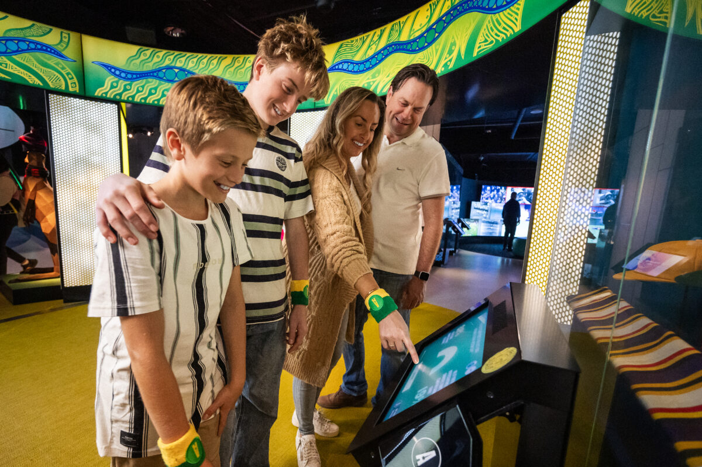
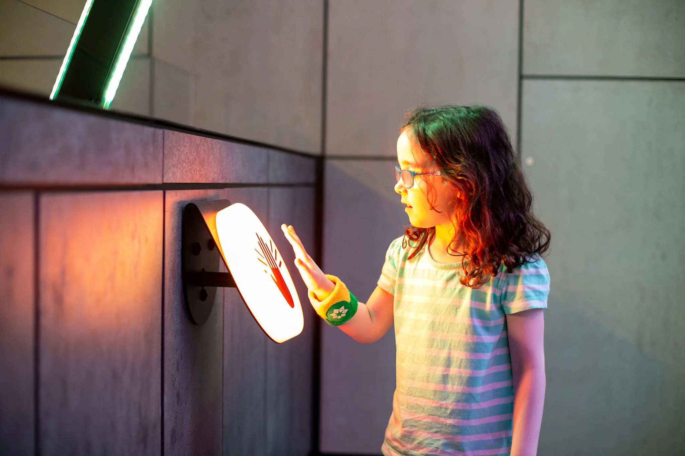
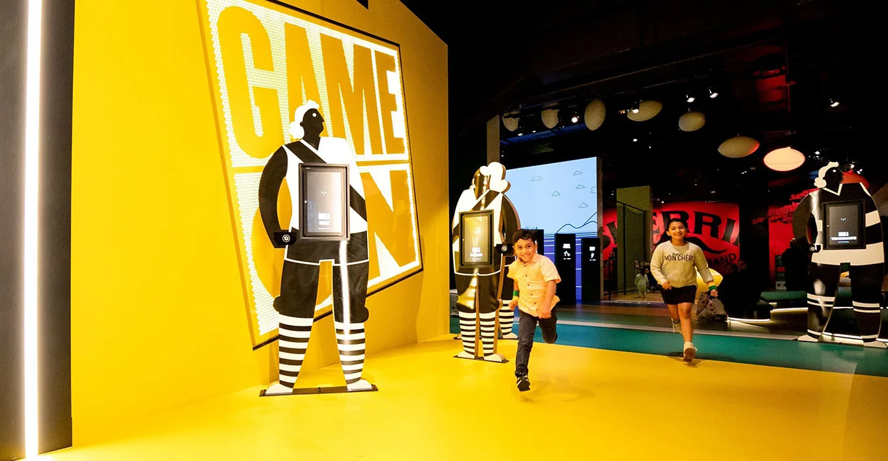
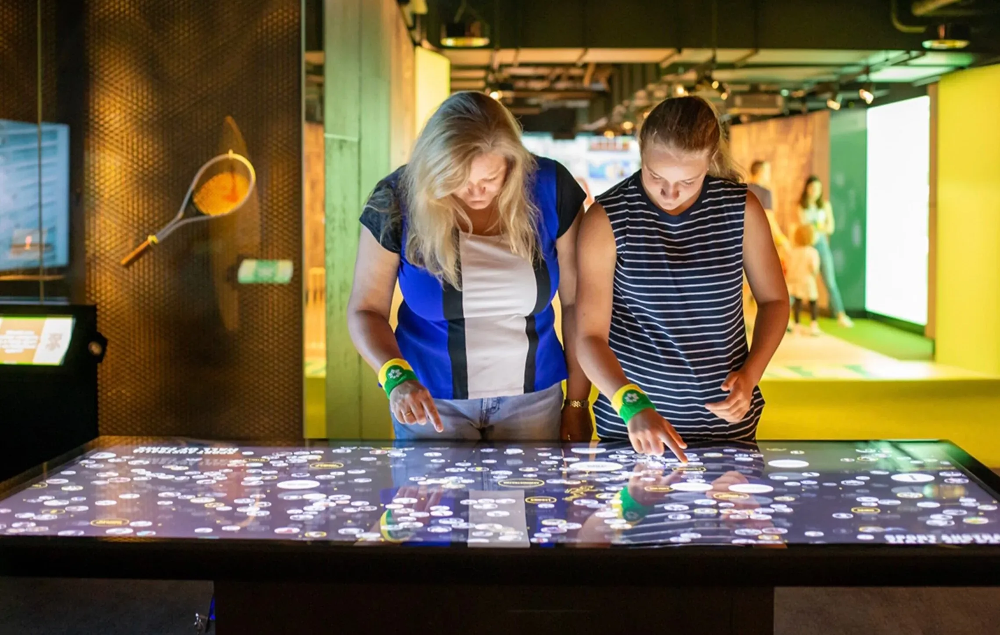
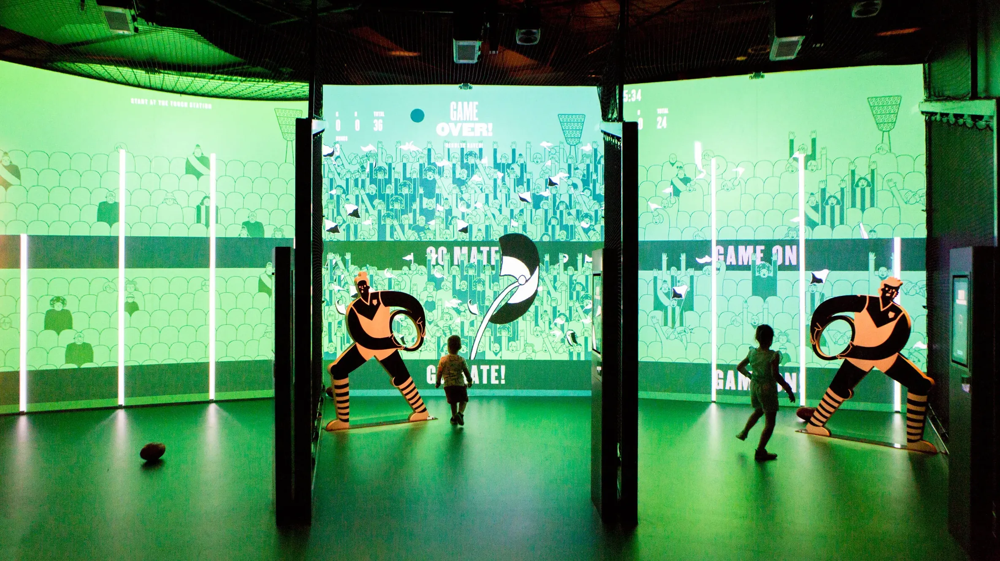

Australian Sports Museum
Melbourne, Australia
Located at the Melbourne Cricket Ground, the Australian Sports Museum tells the story of Australian sport through its people, moments, and cultural impact. While at Art Processors, I worked on the redevelopment of the museum's galleries, leading the visitor experience design and shaping how visitors would interact with the stories throughout the space.
I facilitated workshops with the museum team, developed the experience framework, and tested concepts with visitors. With around half of visitors being children, the experience was designed around participation, curiosity, and play—encouraging visitors to take part rather than simply observe.

Visitors receive a wearable band on arrival which connects them to interactive experiences across the museum. I designed the interaction model for the band so it could link together many different moments throughout the visit—saving results, recording choices, and creating a personal thread through the galleries.

Working closely with curators, I also helped develop a digital interpretation system that replaced most traditional wall labels. Instead of long blocks of text, displays begin with short provocations or questions that invite visitors to respond. A display about horse racing, for example, asks "Who really wins the race — the horse or the jockey?" before unfolding the stories behind the objects nearby.


The band connects these moments across the museum—from interpretive displays to the competitive challenges of Game On—allowing visitors to collect highlights from their visit and see their responses, scores, and selections afterwards online.

The result is a museum experience built around curiosity, participation, and personal connection with the stories of sport.